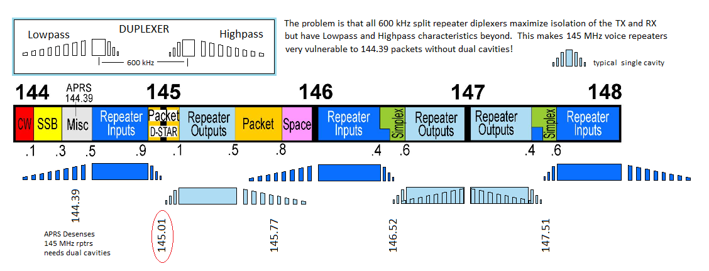
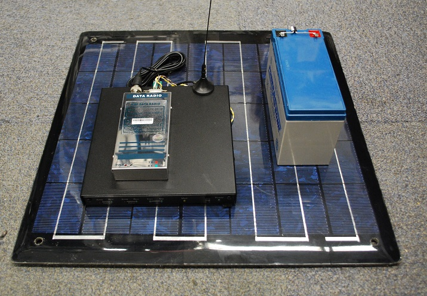
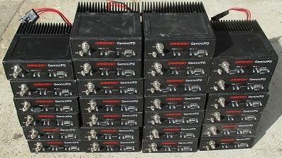
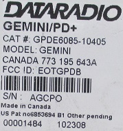
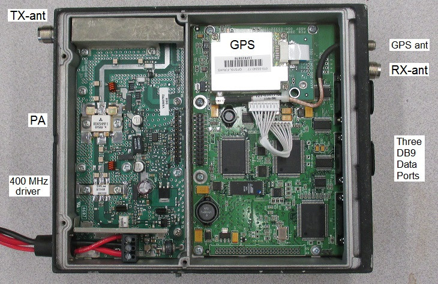
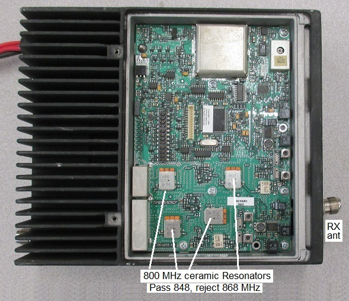
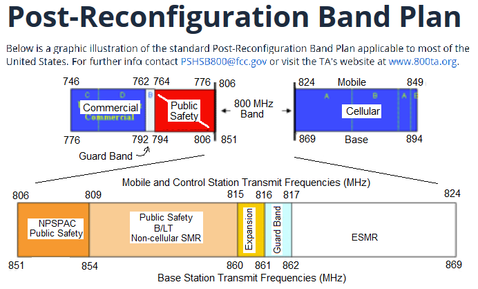

The East Coast Backup Emergency Amateur Radio Network
With 9600 baud success for the last several years in the annual Golden Packet Demonstration/event, it is time to move on with thoughts on a more permanent 9600 baud AT backbone. There are several exsting packet networks in adjacent states that couldd benefit from the connecctivity of some of our high sites.
Dual Port KPC-9612 Nodes Available! In January 2021 the project received a donation of fifteen or so dual port KPC-9612 TNC's that are ideal for this project. Each site would have a backbome radio on the exclusive 9600 baud port and would have a local radio and channel on a local user access port. The network would simply be a KA node network built into the TNC's.
Background: We think this East Coast chain of mountains offers a great opportunity to build an East Coast long haul wormhole packet path covering the 2000 miles from Maine to Georgia. The paths have been proven every year since 2009 during our annual Appalachain Golden Packet Event where dozens of us climb the mountains and set up temporary APRS digipeaters to relay the golden packets the entire 2000 miles. Starting in 2016, we shifted from 1200 to 9600 baud to better characterize the paths for a permanent backbone. All stations reported success from Maine to Georgia with only a marginal link in Virginia from AO mountain. This has given us excitement about this potential network. It seems the path is viable for this long haul backup emergency communications network while serving hikers on a routine basis.
BACKBONE FREQUENCY SELECTION: The existing APRS channel on 144.39 provides full connectivity for hikers on the mountains, so this backbone network is not for APRS but really for an emergeny east coast backbone and user-to user packet experiments. In that sense, only the backbone frequency has to be a single choice from main to Georgia, but the individual access frequencies can be on VHF or UHF at each node independently since the network acess points will be published and should also appear as Frequency Onjects on 144.39 to self identify each site.

SO WHAT FREQUNECY BAND FOR THE BACKBONE??? ... That is the question and there are LOTS of considerations. Most importantly to come up with a one-design that is reproducible and reliable. Issues are:
Mountain Map: The map at right shows red circles on the sites where Hams already have permanent access and could possibly install a permanent node in this East Coast 9600 baud backbone. Are there others? (See below)!
OTHER EXISTING PACKET NETWORKS: One advantage of our Appalachian Mountain experience is that it can be used to link some of the other disconnected packet networks in adjacent east coast states. Here are some examples. Although purists in these networks look down on single frequency backbones due to their ineffiiciency (when used in broad networks), it can be shown that linear strings of nodes on a single frquency are quite efficient since each node only hears its two adjacent nodes and does not hear all the other hiddne transmitters in a broader network (which requires 4 times as many radios per node as the long linear backbone.) So if our sites on our mountains could provide a backbone wormhole between experimenters in other networks, it might be nice.
Level-4 Networking: While we recognize that single frequency backbone networking is a definate no-no in good network design, that mostly applies due to the interference and collisions of hidden transmitters hitting all nodes from all sides. But, this is not a significant problem for a long linear node string where each backbone node only hears its two adjacent North and South nodes and generally, under light use, packets are only going in one direction and acks in the reverse. The powerful adantage is that it only takes one radio per site instead of three or more.
219 MHz though ideal is not workable? 220 could be an ideal band for the backbone since it could fit in easier at some sites. But we looked at the special 219 MHz band where the FCC has very stringent rules under part 97.303(e) to get a frequency. These frequencies are shared with the Maritime AMTS system (see also). The ARRL maintains a list of these 219 MHz AMTS stations and these are the ones near the AT. But there has been so little 219 MHz activity, and no one seems to know the status of those frequencies. Scott Gordon reports that in 2016 it was being considered for Train Control. The company that bought most of the spectrum in 2007 seems to have gone bankrupt in 2011?. I consider this approach a deadend.
223 MHz channel: There are 7 digital 20 kHz channels in the 223.52 to 223.64 MHz range (ARRL band plan). We were considering this 30 Watt 220 MHz radio. Here is the 15 pin I/O connector and the the full radio manual.
433 MHz might be good! On the other hand, since this will be a slow grow grass roots effort, an advantage of 433 MHz as a backbone since it can also then be initially easily tested with users existing dual band radios the network matures with second radios on local user channels. We just add one radio and the 9612 TNC and the initial connectivity can be exercised. By using a 433 MHz simplex channel, we are far enough from 445 repeaters so that minimal filters are needed and maybe we can simply find a path the entire way using only existing Ham sites? Below is a set of plots from APRS.FI plots of all the existing APRS digipeater sites. If we could get those hams to add a 433 MHz TNC we might make this work!
Or Maybe initially on 2 meters: Cavity diplexers at repeater sites have excellent isolation between their TX and RX frequencies but the cavities also have much broader highpass and lowpass attenuation beyond the repeater frequencies. For example it takes two large cavities on 144.39 to allow operation at any 145 MHz repeater site because the repeater input cavities are quite open below their tuned frequency. So any colocation of APRS at any voice site usually requires heavy filtering so as to not desense the repeater. For a single ATGP channel, the best possibility might be in the 145.01 area which is quite far from repeater inputs. This solves the repeater desense problem but puts the onus on us then to have a cavity to protect our front end. See the 2m bandplan and cavity considerations below right. The original national packet channel of 145.01 seems to be the best starting point.

Georgia to Smokies - W4KCO-3, KE4TOZ-3
Smokies to Comers Rock - W4MLN?
Comers Rock through Roanoke - K4CQ-4,
Roanoke through Blue Ridge - N4DSL-3
Blueridge to Maryland Mountains - MDMTNS
Maryland Mountains to GD Hill area - Lancaster Transmitting Society
GD Hill area to Camelback in the Poconos - CMLBCK
Poconos to Sams point NY - Sams Point
Sams point NY to MasachusettsGreylock - permanent?
Massachusetts to Vermont - K1DF-7
Vermont to New Hampshire - KB1FDA-1
New Hampshire to Sugarloaf - KQ1L-1
Sugarloaf to Mt Katahdyn - W1PIG
Network Node: Each node would consist of the 9600 baud backbone radio link hopefully on 219 MHz (or 433 MHz) and a local VHF or UHF 1200 baud user access frequency. The other figure at right show some of the user radios that have built in 1200 and 9600 baud APRS modems and are fully capable to pass traffic on the user access ports of this network. The links below are the original AT-GoldenPacket links to give an idea of the distance of each link:
- - Operating Station. . . . . . Report . Distance . . . . Other End
 Permanent Node Hardware: The image at right suggests a possible design for a 5 watt node using a 5W UHF digital radio, a KPC-9612 TNC, a 7 AHr battery and 20 watt solar panel. Packaging for permanent installation in an unpowered, unattended remote site is a chaallenge to this network but if we start instead where existing sites exist with power, and look for new sites that can linke them, it should be easy.
NODE-to-NODE FREQUENCY - Packet and coordination: Initially we thought about using 6 meters or 900 MHz so that it was more compatible with other VHF/UHF radios at existing sites. But, as noted above,the end-user-terminal equipment is almost always going to be an integrated APRS dual band radio, so user operations should be restricted to VHF or UHF, but backbone can be any band. Low band 6m 150W radios are readily availble but BIG and someone has to do the mods. Then at Dayton 2016, we got a batch of data radios, but they turned out to be 800 MHz commercial (see below)...
. . .
END USER FREQUENCY: Bryan and Bill pointed out that end users should not be on the same frequency as the backbone and so that suggests user ports should be on VHF or UHF to work with their existing 9600 baud packet radios. But on the other hand, the KPC-9612 is dual port, with one port operating at 9600 baud and the other at 1200 baud. So naturally, the backbone has to be 9600 baud to handle the bulk of the traffic and so the end user is at 1200 baud on the local frequency. But then we realised as a first step, just put a single 433 MHz radio operating at 9600 baud. Users APRS radios can hit it directly for initial testing and to build interest in level-4 networking experimentation.

  NODE BATTERY POWER: If battery power is needed, here is a rough estimate of battery capacity. For example, a VHF 5 watt radio and Kantronics KPC-9612 TNC each draw about 40 mA but peaks at 1 Amp during transmit. If we assume a 24 hour dutycycle of about 4%, then the TX average current is another 40 mA for a total of about 120 mA average current drain. A rule of thumb for the east coast is that you get about 4 hours average solar power per day and that needs to power the system for the full 24 hours. So the solar capacity has to be SIX times the average current to break even on sunny days. Multiply this by at least 5 times to make up for cloudy days and we end up needing about 2 Amps solar charging (24 Watt panel) and about 7 to 9 Ahrs of battery capacity as shown above right.
900 MHz Possibility? Here is a batch of radios I picked up at Dayton 2016. They are clean and support 14.4 kPBs on three serial ports and have separate antennas for TX and RX. But the bad news is that they are 800 MHz and of course we have no access to their firmware and coding. The guy who sold them to me said they were "UHF" so I guesss he was technically correct. Anyway, there are 25 of them and if we can figure out a way to get them to 900 MHz or use them at 420 MHz, then these might also make a nice backbone.
 . 
 Operating at UHF 433 MHz? Looking at the 800 MHz band plan, these radios appear to be transmitting in the 824 MHz ESMR band and reeciving in the 860 MHz range. A possible way to use some of this hardware is to simply bypass the 45W PA doubler final transistor (824 MHz) and use the output in the lower end of the 420-450 MHz amateur band from the 15 Watt Driver transistor which already works at 412 MHz or so. Then scrap the 850 MHz receiver and stick in our own receiver for 433 MHz?
UHF Exciter Transceiver: The very rugged die-cast box has plenty of room for a UHF transceiver of our choice. The D2294UK 15W driver transistor (datasheet) needs about 1 Watt for full power, so all we need to find is a small 1W XCVR? OOPS... and then add a T/R circuit. Maybe we can do that with 1/4 wave lines and diodes? Or does that just generate products..
Full power on UHF? And since the 45W PA transistor (datasheet) will work fine (See S parameters) down at UHF, maybe we can cut the output strip lines and add inductance and retune it for UHF and get the advantage of the full 45W power? How does one re-bias the PA to encourage it to operate as an AMP and not as a doubler? Higher or lower bias?
Bob, WB4APR
See my other GENERAL page on APRS applications and Ideas on The AT
Return to The APRS HOMEPAGE or SiteMap.
{kind=link}
{kind=link}
{kind=link}
{kind=link}
{kind=link}
{kind=link}
{kind=link}
{kind=link}
{kind=link}
{kind=link}
{kind=link}
{kind=link}
{kind=link}
{kind=link}
{kind=link}